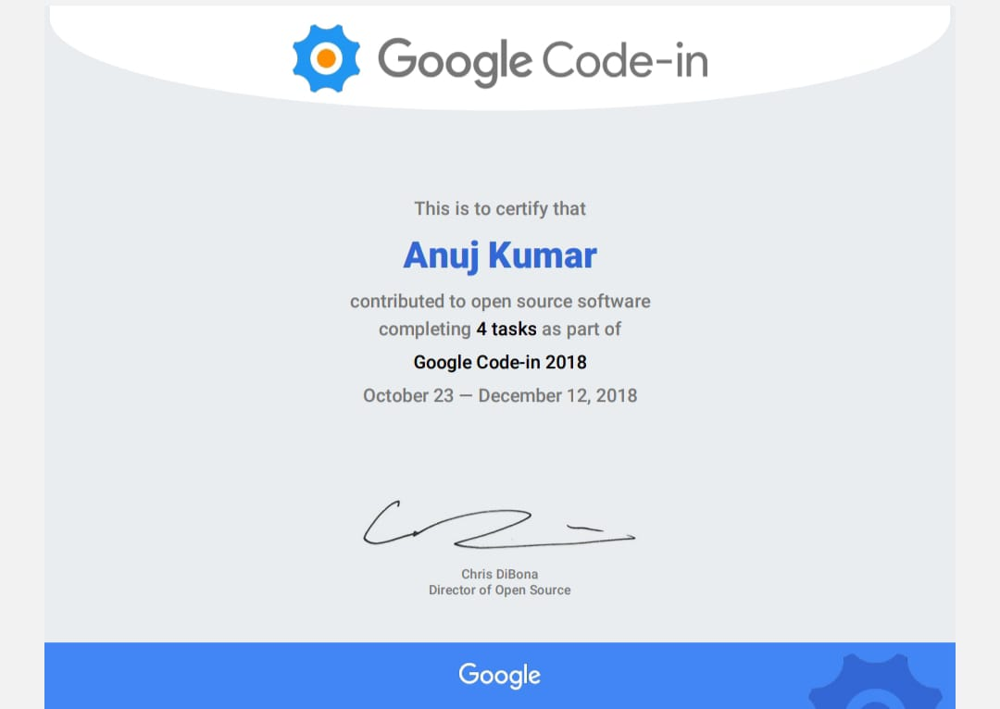

Summary:
My name is Anuj kumar! I am from India and currently pursuing B.tech in CSE from NIST UNIVERSITY,Berhampur,Odisha. I am very keen about web development and software engeneering. I have also participated and completed in Google code-in 2018 contributing 4 task in open source software.I am now curently learning web development from Udemy where my mentor is Angela Yu. She is a very great instructor. She teaches everything from basic making learning very fun!
Educations:
- I have completed my 10th from an ICSE school in 2020 with 94.6%.
- I have completed my highschool from Sri Krishna Vidya Mandir in 2022 with 80%.
- Now,i am currently pursuing my B.tech in CSE from NIST UNIVERSITY,Berhampur,Odisha.
Work Experience:
- I have my expertise in Front-end,Backend and fullstack.
- I have also participated and completed GOOGLE code-in 2018 contributing 4 tasks to the open source software.
AWARDS:

My hobbies
Contact me